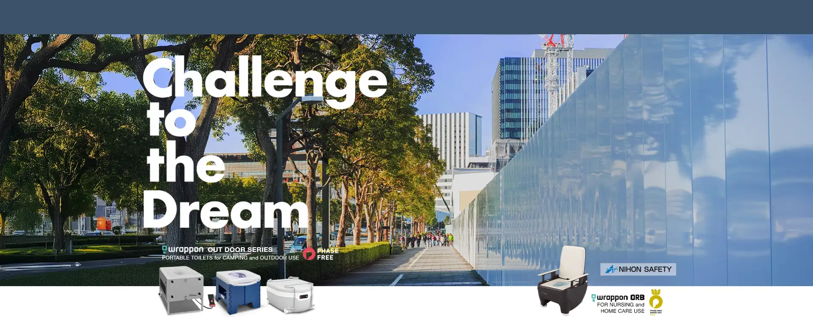
랩폰(WRAPPON) 일본 본사 소개
2005년 시작된 Nihon Safety의 Wrappon 사업부는
자동 밀봉 화장실의 개발·제조·판매를 전문으로 합니다.
대표이사 인사말
당사는 건설 현장에서 사용하는 가설 자재를 임대하는 사업을 바탕으로 설립되었습니다. 회사 이름에 ‘안전’을 뜻하는 Safety가 담겨 있듯이, 건설 현장의 안전을 지키는 자재와 서비스를 제공해 왔습니다.
일반인이 건설 현장에 대해 느끼는 ‘위험한 장소’라는 이미지를 줄이고 도시 경관까지 고려한, 윤기 있는 순백색의 평평한 가설 펜스 ‘Ad Flat’을 일본 전역에 보급했습니다. 이제 거리에서 흔히 만나는 제품이자 사실상의 표준 제품으로 자리 잡았으며, 굿 디자인 어워드와 롱 라이프 디자인 어워드를 수상했습니다.
최근에는 자체 개발한 자동 포장식 화장실 ‘WRAPPON’을 건설 현장을 넘어 돌봄, 재난 구호, 의료, 레저와 기업의 사업연속성계획(BCP) 등 새로운 분야로 확대하고 있습니다. 재난이 발생하면 피해 지역에 WRAPPON을 보내 대피소 생활자에게 깨끗하고 안전한 화장실을 제공하며 재난 구호에도 기여하고 있습니다.
앞으로도 다양한 분야에서 해결책을 제공하고, 고객과 여러 이해관계자의 기대와 신뢰에 부응하는 기업의 책임을 다하겠습니다. 모든 사람이 안전하고 안심하며 쾌적하게 사회활동을 이어갈 수 있도록 노력하겠습니다.
Shinichiro Nishida
대표이사 사장
Nihon Safety Co., Ltd.
회사 개요
기업 이념: 꿈을 향한 도전
세상에 없던 것을 만들어 더 안전하고 쾌적한 사회를 이루는 것이 우리의 사명입니다. 꿈을 그리며, 꿈을 품고, 꿈을 실현합니다. 지금도, 앞으로도.
제조사 · Nihon Safety Co., Ltd.
1980년 설립된 Nihon Safety는 건설 현장에서 사용하는 가설 장비의 임대를 주요 사업으로 성장했습니다. 이후 쾌적한 이동식 화장실, 가설 주거 시설과 중장비 거래로 사업 영역을 넓혔습니다.
건설 현장의 이미지를 바꾼 Ad-Flat
임대 제품 가운데 자체 개발한 현장 둘레용 펜스 시스템 ‘Ad-Flat’은 건설 현장의 이미지를 크게 바꾸었습니다. 현재 일본 전역의 건설 현장에서 사용되는 사실상의 표준 제품으로 성장했습니다.
Wrappon 사업부 · 자동 포장식 화장실
2005년, 자체 개발한 일본 최초의 자동 포장식 이동식 화장실 WRAPPON의 제조를 시작했습니다. Wrappon 사업부는 자동 밀봉 화장실의 개발·제조·판매를 담당하며, 재난 구호, 돌봄, 의료, 레저와 건설 분야에 제품을 제공하고 있습니다.
WRAPPON 제품 연혁 보기 →사회공헌 활동
개발도상국과 장애인을 지원하고, 지진 등 자연재해가 발생했을 때 대피소에 WRAPPON 화장실을 제공하고 있습니다.
창업자의 철학
각자의 개성을 존중하라
모두가 같은 생각과 감정을 가진다면 회사는 지루해집니다. 서로 부딪혀도 괜찮습니다. 새로운 생각은 그 과정에서 탄생합니다. 개성을 잃으면 우리 회사를 특별하게 만드는 것도 잃게 됩니다.
1 + 1 = 2에만 머물지 마라
공식만 따르는 사람에게서 혁신이 나오지는 않습니다. 그렇지만 ‘2’라고 말할 수 있는 사람도 필요합니다. 그렇지 않으면 회사가 무너질 테니까요!
실패를 두려워하지 마라
일곱 번 넘어져도 여덟 번 일어섭니다. 그렇게 우리는 더 강해집니다. 물론 회사로서는 성공하기를 바랍니다!
세상에 없던 것을 만들어라
그것은 사람들에게 실제로 도움이 되는 것이어야 합니다. 고객에게 감사의 말을 듣는 것은 장사하는 사람에게 가장 큰 행복입니다. 개척 정신을 계속 이어갑시다.
좋은 소통이 가장 중요하다
현장의 구성원이 목소리를 낼 수 없다면 회사는 끝입니다. 비난이 아니라 서로를 존중하는 솔직한 소통이 필요합니다. 의견이 달라도 찾아와 이야기하세요. 회사의 발전에 도움이 된다면 귀 기울이겠습니다.
해외에 나가 영감을 얻어라
여행 경비도 지원하겠습니다! 같은 곳에서 매일 같은 것만 본다면 새로운 생각을 얻기 어렵습니다.
회사 안에서는 모두가 역할을 맡고 있다
경영은 머리, 영업은 다리, 관리는 손입니다. 그렇다면 장비 센터는? 바로 심장입니다. 덥거나 추운 날씨에도 제품을 정성껏 다루는 일, 그것이 고객의 신뢰를 만듭니다.
상사만 바라보지 마라
평가는 위에서도, 옆에서도, 아래에서도 이루어져야 합니다. 우리에게 필요한 것은 360도 피드백입니다. 그것이 개인과 회사 모두의 성장을 돕습니다.
누구나 비판은 할 수 있다
아이들도 부모를 비판합니다. 하지만 비판만으로 달라지는 것은 없습니다. 중요한 것은 그 문제를 해결하기 위해 무엇을 하느냐입니다.
계획은 쉽게 세울 수 있다. 중요한 것은 실행이다
계획만으로 회사를 운영할 수는 없습니다. 행동으로 옮겨야 합니다.
영업만 하는 사람이 되지 말고 숫자를 이해하라
숫자는 살아 있습니다. 숫자를 이해하면 영업이 즐거워집니다.
항상 최선과 최악의 상황을 함께 생각하라
저는 하루 24시간, 일 년 365일 그렇게 생각합니다.
지역 최고에 머물지 말고 세계 수준을 목표로 하라
세련된 엘리트가 아니어도 괜찮습니다. 거친 사무라이가 되세요. 일류의 거친 사무라이가 되는 겁니다.
진심을 말하라
저는 늘 솔직했습니다. 숨길 필요는 없습니다.
누구에게나 부족한 점은 있다. 나도 마찬가지다
하지만 단점을 고치는 데만 매달리기보다 장점에 집중하세요. 모든 약점을 없애려 하면 사람을 위축시키게 됩니다.
끊임없이 도전하는 정신을 이어가야 한다
그 정신이 없다면 우리 회사의 미래도 없습니다.
Nihon Safety의 사업
건설 현장에 필요한 가설 자재를 전문으로 다룹니다.
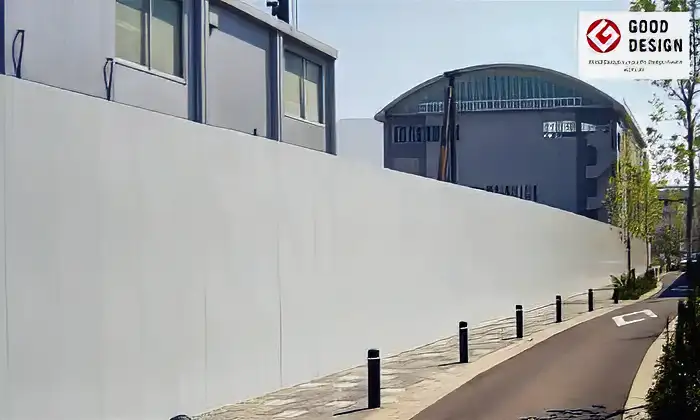
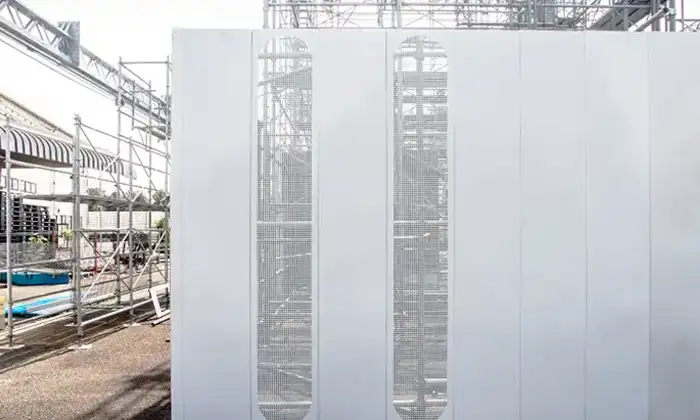
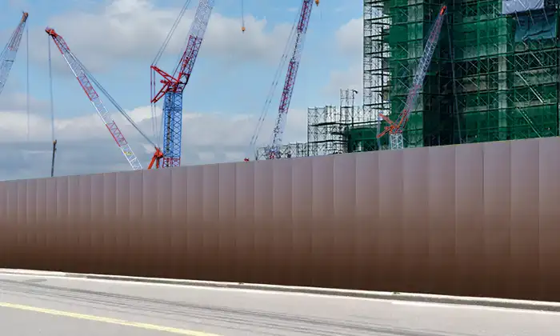
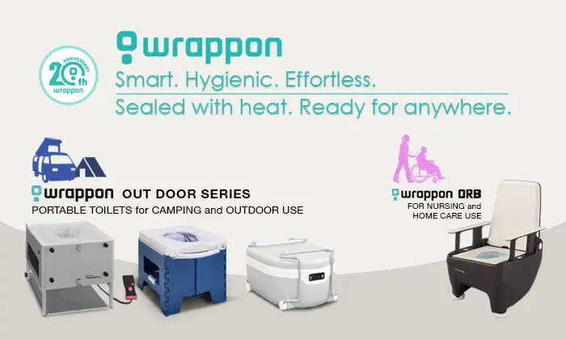
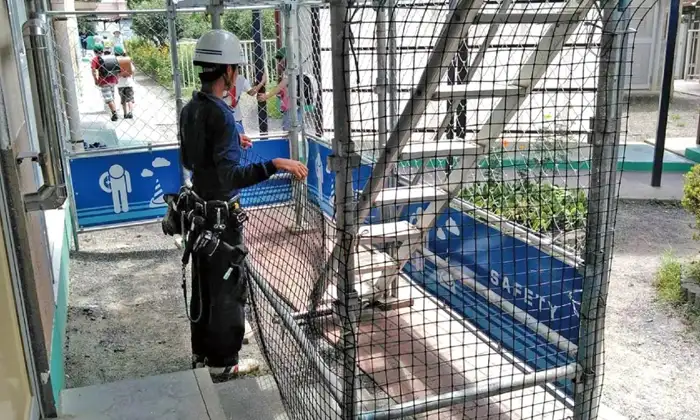
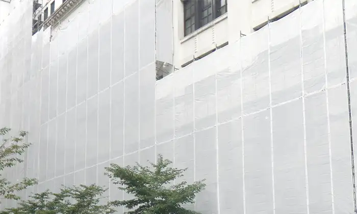
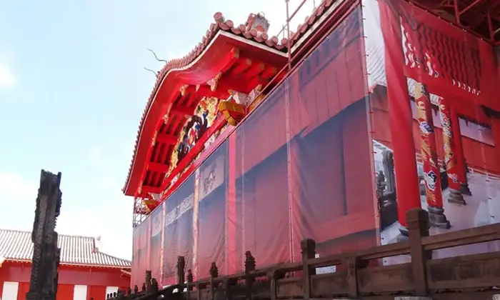
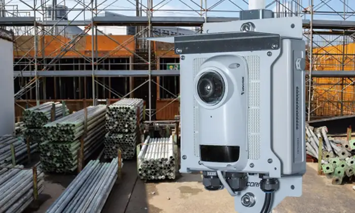
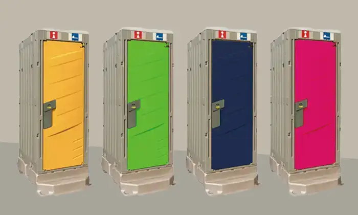
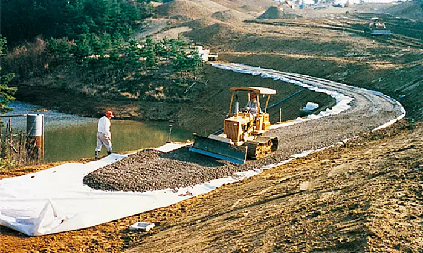
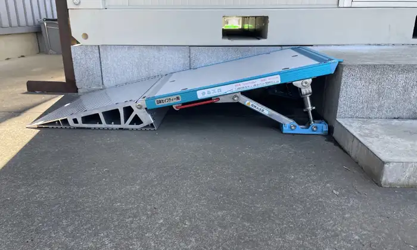
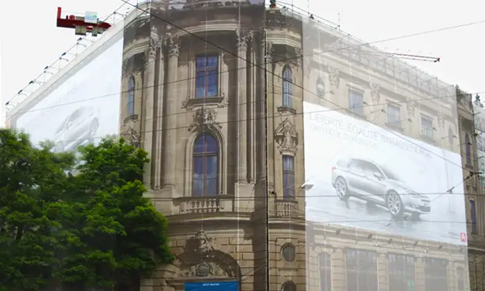
1 / 12
Nihon Safety는 건설 현장에서 사용하는 가설 자재 임대를 주요 사업으로 하는 기업입니다.
자체 개발한 현장 둘레용 펜스 ‘Adflat’은 건설 현장의 이미지를 크게 바꾸었습니다. 현재 일본 전역의 건설 현장에서 사용되는 사실상의 표준 제품으로 성장했습니다.
건설 현장의 안전과 환경 개선을 지원하며 쌓아온 노하우로 사업 영역을 넓히고, 세상에 없던 새로운 것을 만들어 더 안전하고 안심할 수 있는 쾌적한 사회를 이루고자 합니다.
그것이 우리 회사의 사명입니다.
한국 고객 문의
1877-8262한국 고객은 여기로 연락해 주세요.
랩폰코리아 · 패밀리카라반
경기도 용인시 기흥구 구성로 330
본사 소개
본사 주소
Wrappon 사업부 · 이치반초 도큐 빌딩 11층
일본 도쿄도 지요다구 이치반초 21
우편번호 102-0082
한국 고객 문의